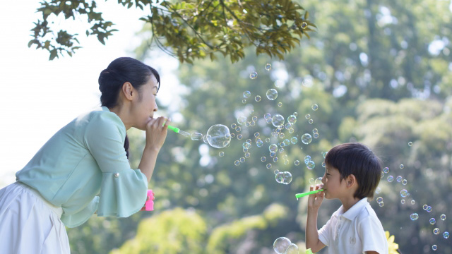

親の影響は子にとってどれくらい大きいものなのか。その影響は生涯に渡って続くものなのか。すなわち人の幸不幸を決定づけるほど大きいものなのか。
最近そんなことを考えています。
もちろん親の影響の及び方は人によって様々でしょうし、親が良かれと思って子どもにしたことがマイナスの影響を与えていたり、逆に親がいい加減な育て方をしたのに子供は真っ当に人生を歩んでいるケースもあります。
また、子ども自身が「親との関係」を途中で見直すこともあります。親に対する認識の変更ですね。
たとえば「自分は親から不当な扱いを受けていた」といささか恨む気持ちをもっていたとします。しかし色々と人生経験を積むうちに「あの頃厳しくされたことが困難を乗り超える原動力になった」と述懐することもあり、そうすると「あれは親の愛情だったのだ」と認識を新たにするかも知れません。逆に愛情と思っていたが実は虐待だったと気づくこともあります。
これは要するに子どもの側からの「親に対する評価が変わった」ということです。
ずっと「自分にとって親とはこういう存在だった」という思いが何かのきっかけで変わり得るということです。
というのも私自身まさにいま「親に対する認識の変更」を経験しているところだからです。
私事ですが、今年９０歳になる私の母は日々認知症が進み今や息子の顔も見分けられないレベルです。
ただ、認知症といっても暴れたり人に迷惑をかけることはなく至って穏やかで平和な有り様なのです。
しかしこの穏やかで平和そうな母親の姿こそが、長い間積み上げてきた私の中の「母親像」の変更を促したといえるのです。
母への反抗
私にとって母は厳しい存在でした。
あまりほめられた記憶はなく、憶えているのは叱られたりとがめられた場面ばかりなのです。兄弟ゲンカをすれば私だけ（長男だからという理由で）叱られ、学校に上がれば成績が悪いと怒られ、あげく「あなたは男のくせに神経質で細かすぎる」と性質についてもダメ出しされる。
子ども心に私は「母親から愛されていないのだ」と思いました。「実の親ではないのでは」と疑ったりもしました。
「自分は母親から嫌われ、期待にも応えられない人間なのだ」
この思いは少年時代の私を苦しめ続けました。
「自分は価値のない人間ではないか」「自分はダメ人間で人から愛されない」
このような自己否定の考えにとらわれ続けたのです。
思春期に入るとそれまでのウップンを晴らすかのように私は母に反抗し始めました。素行も悪くなり学校をサボったり、深夜まで友人たちと街を徘徊したりケンカ騒ぎを起こして警察ザタになったこともあります。
母とも毎日怒鳴り合うような状態。母も私の罵詈雑言に負けずに言い返します。
「そんなに偉そうな口をきくならこの家を出て行きなさい。自分で生活しなさい！」
「おお、いつでも出て行ったるわい、こんな家」
こんな応酬が日々くり広げられていたのです。
私が大学入学と同時に東京に出てきた背景には、自活をしたいというよりあの家（母親）から離れたいという気持ちが大きかったと思います。
その上でそれなりの人物になって母を見返したいという思いもありました。
本当の母の姿
私が成人してからも母子間の葛藤は止むことはありませんでした。私と母の間にはいつも緊張感がただよっていたのです。
だから世間一般に見られる親子の親密な情愛というものは私たちには無縁なのだと感じていました。
それは母が老齢になり私が中年を過ぎても続いていました。
妻からは再三「どうしてもっとお母さんに優しくしてあげられないの」と言われました。
私も年老いた親にもっと優しくと思ってもそう思う程、何かが押さえつけて私を頑なにするのです。
それでも足腰も弱まりいよいよ母も介護が必要となる頃、私の頑なな気持ちは徐々に変わってきました。それは母がもはや反抗の対象ではなく、庇護すべき存在になったからでしょう。
決定的な変化は母が介護施設に入ってから起こりました。入所後手厚い介護のおかげで健康は回復したものの認知機能は失われ始めたのです。
認知機能が失われるにつれ母はますます穏やかで平和な感じになってきました。
私たちが訪れると嬉しそうに色々話します。話の内容はつじつまの合わない意味不明なものですが、そこには何となくユーモラスな味わいもあり私たちを笑わせたりします。
この穏やかでユーモラスな面こそが本当の人格だったという発見です。
人間は多彩な存在です。母の中にもいろいろな側面はあったでしょうがベースには、細かいことにこだわらないノンビリした性質があったということです。
母が私に厳しかったのは事実です。しかしその厳しさは私のために母が選んだもうひとつの側面であり母親として演じていた「役割」だった。それに気づいたということです。
新たな気づき
こうして気づいてみれば私の中で様々なことがオセロのように反転し始めました。
そもそもなぜ母は私に厳しく接するようになったか記憶をたどれば…
幼児期、私は父や父方の祖父母から甘やかされて育ったこと。（昔は長男は特別視される傾向があった）
特に父は溺愛に近く甘やかし、結果私はワガママで思い通りにならないとカンシャクを起こすようになった。
したがって、母は私に対し父親的に厳しく育てざるを得なかった。そして、父の死後は、一家の長として文字通り父親の役割を果さざるを得なかった。
つまり母は私にとって「父親」であったということ！
そう考えると思春期の頃の壮絶な母と息子のバトルも、父と息子の対立に近い感じがします。
だから母の厳しさは愛情が欠如していたからではなく、むしろ愛情の現われであったということ。そして不本意ながら「父親」の役割を果すために、本来の「大らかな」気質を封印せざるを得なかった。
しかし私はそのことに気づかず反発し続けたのです。
ただ、そのおかげで私の自立心は人一倍強くなったといえます。
逆に言えば私にとっては、自立するために母親への反発を必要としたのかもしれません。
親への反抗は自立を促す契機になるからです。つまり母は私を自立させるために無意識に憎まれ役を買って出てくれたのかも知れません。
もし、そうなら父親役になって私に反抗させた母の「教育」は成功したといえます。
「今こうして自分があるのは母親のおかげ」というということになるからです。
自分は母親に厳しくあたられた。理不尽な扱いを受けてきたという思いが、ようやく母親も実は懸命に息子を育てたのだという気づきに変わった。認識が変更されたということです。
「今ごろ分かったのか」と言われるかも知れませんが、親子の葛藤を解きほぐすのは肉親の情がからむだけに私たち親子に限らず時間のかかるものではないでしょうか。